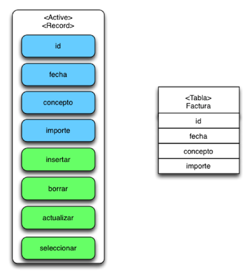

- Es un Patrón de persistencia que consiste en una Clase que se encarga de implementar todas las operaciones de consulta y modificación de una tabla concreta de la base de datos.

- Beneficios: la aplicación queda completamente aislada del trabajo con SQL ya que delega a Active Record todas las operaciones sobre la tabla.